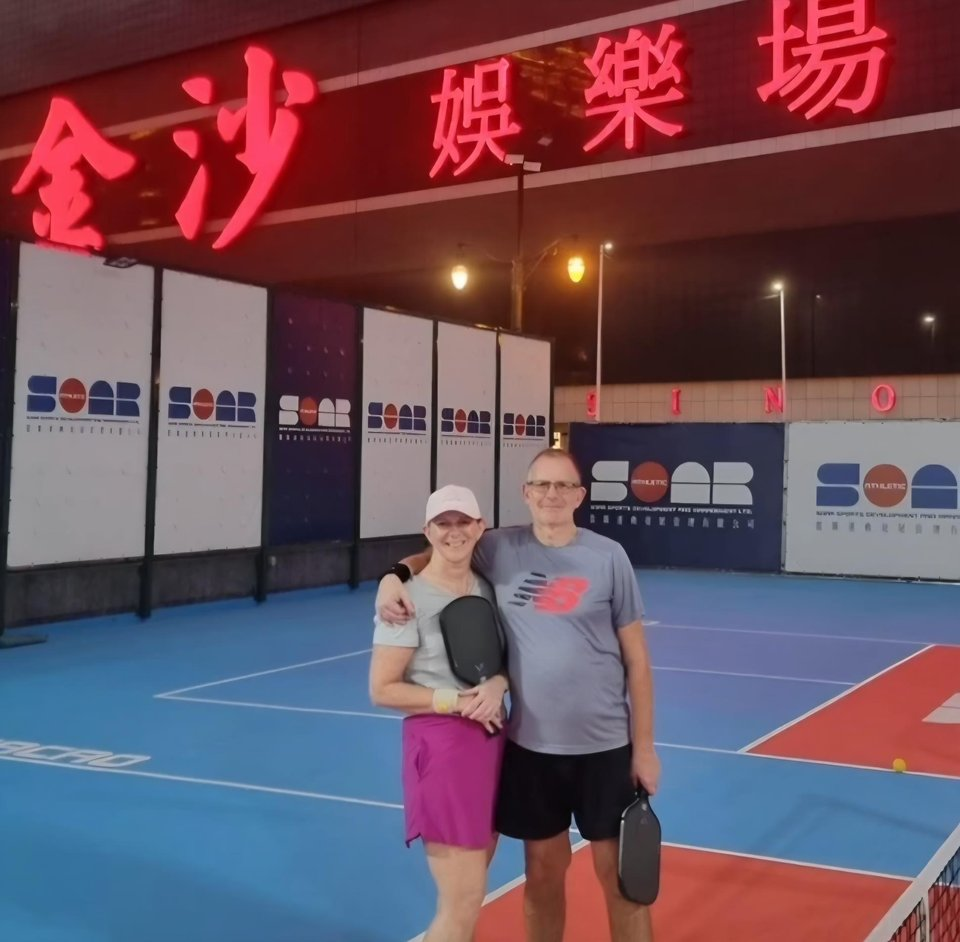

Macau got its first dedicated pickleball venue in July 2024: Soar Sports Centre, at Fisherman's Wharf on the Macau peninsula. We played there in February 2025. With almost no public courts in the city, Soar is the place for a visiting player to get a game.
Guide checked: November 2026 · Last played: February 2025

Soar Sports Centre sits inside Macau Fisherman's Wharf on Avenida Dr. Sun Yat-Sen, close to the outer harbour ferry terminal. It was set up by local players Marco Leung, Ben Ngai and Tenny Li, and has 4 outdoor regulation courts with permanent lines and nets, plus lights for evening play.
Soar runs coaching with nationally known Chinese players and hosts the Macau Pickleball League, the city's first, along with most of Macau's competitive events.
We joined open play with local players. The standard was pretty good, and the courts sit right under the neon of the Sands casino — not a bad backdrop for an evening game.
Our take: good courts and good-quality open play with locals. Expect to check sessions in advance, as this is effectively the only place in Macau to play.
| Court quality | ★★★★☆ |
| Quality of games | ★★★★☆ |
| Ease of joining | ★★★☆☆ |
| Competitive level | ★★★★☆ |
| Value | ★★★★☆ |
| Wanderers rating | 8/10 |
Would we go back? Yes. Soar is the one place in Macau we'd head for a game: four decent outdoor courts and a pretty good standard of open play with locals. Ease of joining is the weak spot, so get in touch before you arrive.
There's no walk-in public alternative, so check sessions with Soar in advance rather than turning up.
The courts are outdoors and Macau is hot and humid for much of the year. The floodlights make evening sessions the comfortable option.
Fisherman's Wharf is next to the outer harbour ferry terminal, so the Macau peninsula is the easiest base. From Cotai, it's a taxi ride.
Soar Sports Centre at Macau Fisherman's Wharf, on the Macau peninsula, opened in July 2024 as the city's first dedicated pickleball venue, with outdoor courts, coaching and the Macau Pickleball League.
Very few. Macau has no standard public pickleball courts yet; the free space at Areia Preta Urban Park is used for practice, and the government has allocated a site in Taipa for a future pickleball court.
Soar Sports Centre's courts are outdoor. Macau is hot and humid for much of the year, so early-morning or evening sessions are the most comfortable.
Macau's pickleball scene is small but real, and Soar Sports Centre is the heart of it: four floodlit outdoor courts at Fisherman's Wharf, a pretty good standard of open play with locals, plus coaching and the city's first league. Public courts are still almost non-existent, so plan your games around Soar. For more Asia stops, see our Da Nang, Bangkok and Hua Hin guides.